REAL H200 EXPERIMENT · LEFFA · VITON-HD · 28 SEP 2026
Can a training step point to garment details?
The gradient path works; the full success criteria were not met.One sampled-timestep LeFFA forward → component heatmap + decoded x₀ estimate → frozen DINO crops → gradients to real LeFFA Q/K projections and learned component keys. No live Molmo and no multi-step sampling.
These are single-step estimates from noised paired target images during training, not fully sampled try-on results. LeFFA disables text cross-attention, so this experiment adds semantic keys to its live image-attention query features. It does not claim native collar/cuff text-token attention.
Measured result
3,000 updates across two matched arms; 0 OOMs. 24 optimization images, 8 garment-separated validation images. All held-out cases appear below, ordered by DINO change versus control.
| Arm | Collar mass | Left sleeve mass | Right sleeve mass | Fixed crop DINO ↓ | Pointed crop DINO ↓ |
|---|
| Initial LeFFA | 2.6% | 1.5% | 1.4% | 0.2657 | 0.6863 |
| Localization control | 74.9% | 86.1% | 84.0% | 0.2660 | 0.3610 |
| Localization + DINO | 74.6% | 74.8% | 81.7% | 0.2385 | 0.3213 |
Mass is measured at t=.5. DINO averages all annotated regions at seven held-out timesteps. Paired image bootstrap: DINO − control fixed-crop distance -0.02600; descriptive 95% interval [-0.03382, -0.01861], only 8 images. Negative means improvement.
| Fixed-crop DINO by component ↓ | Initial | Control | Joint | Joint − control |
|---|
| Collar / neckline | 0.1884 | 0.1918 | 0.1636 | -0.0282 |
| Left sleeve end | 0.3652 | 0.3675 | 0.3445 | -0.0231 |
| Right sleeve end | 0.3720 | 0.3626 | 0.3323 | -0.0303 |
Each component average covers the seven timestep evaluations. Only three validation images have sleeve-end annotations. Negative deltas favor DINO training.
Checkpoint audit confirmed updates to all four Q/K matrices (1,024,000 weights). The readout adds 2,880 trainable component-key weights. Median joint update: 0.329 s; peak allocated CUDA memory: 8.41 GiB. Inspect optimizer and weight-update evidence.
Criterion-by-criterion checks
| localization over 80pct each component at half | NOT MET |
| fixed roi dino improves over initial | PASS |
| fixed roi dino improves over matched control | PASS |
| pointed roi dino improves over matched control | PASS |
| dino gradient path verified | PASS |
| completed at least 1000 iterations without oom | PASS |
What was trained
Both arms start from the same pretrained LeFFA and random semantic keys, use the same image order, uniform timesteps and noise seeds, and update two existing up-block Q/K projections. Control: epsilon MSE + 5 × spatial mass loss. Joint: control + 1 × DINO cosine distance. Each arm runs 1,500 updates. DINO is frozen; predicted RGB crops keep gradients through DINO and the frozen VAE. The DINO loss weights fixed-site crops by 90% and attention-centered crops by 10%. Attention head aggregation: full_logits.
Annotations are cached automatic MolmoPoint proposals, not human ground truth. They are supervision only; no boxes enter the localization logits. Crop widths and heights come from metadata: this tests learning component centers, not learning full extents. Collar includes neckline and cuff includes a short sleeve end. The cohort is a small feasibility experiment, not a full VITON-HD benchmark.
Exploratory follow-up. This configuration was chosen after inspecting the first run on these same eight development images. It changes head aggregation, DINO weighting and training duration together. It cannot isolate which change caused a difference, and these images are no longer an untouched final test set.
The original 1,000-update experiment is preserved here. Every held-out example
Open a component row for matched detail crops and initial/control/DINO heatmaps. A lower DINO number is a feature-space change, not a guarantee that a visible defect was fixed.
03753_00 DINO − control: -0.0499 at t=.5
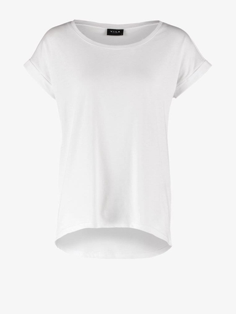
Garment condition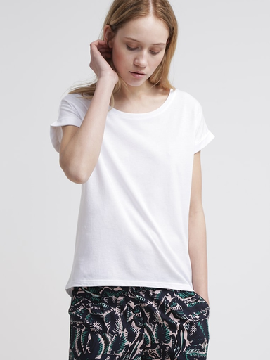
Real targetInitial single-step estimate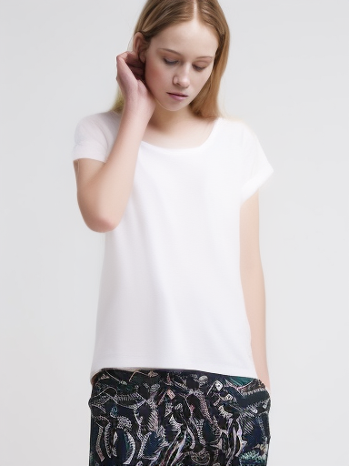
Localization control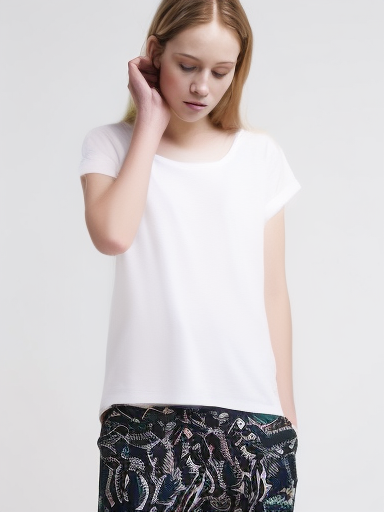
Localization + DINOCollar / neckline · mass 1.4% → 78.8% · fixed-crop distance 0.2028 → 0.1706
Exact same region in every image
Real target cropInitial LeFFA
distance 0.2028Localization control
distance 0.1950Localization + DINO
distance 0.1706
Where the readout points
Cyan: automatic target box. Yellow: attention-centered crop. Heat colors are normalized per map for visibility; numeric mass is the quantitative comparison.
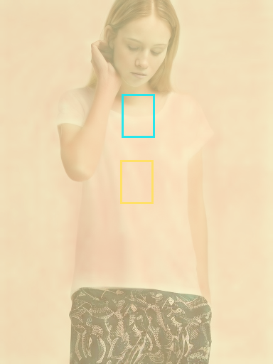
Initial LeFFA
box mass 1.4%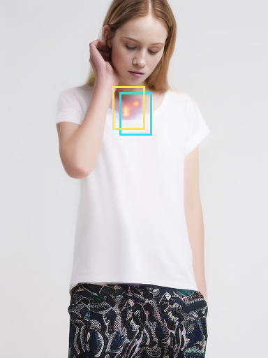
Localization control
box mass 94.5%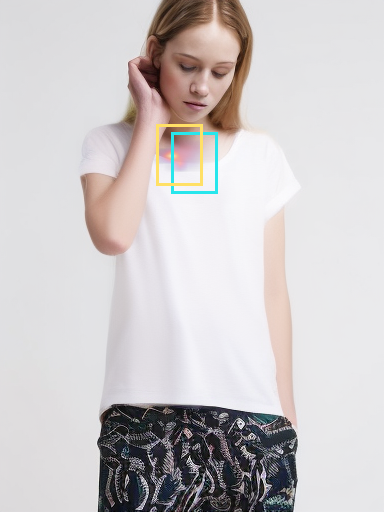
Localization + DINO
box mass 78.8%Left sleeve end · mass 1.4% → 90.0% · fixed-crop distance 0.1512 → 0.1506
Exact same region in every image
 Real target cropInitial LeFFA
Real target cropInitial LeFFA
distance 0.1512Localization control
distance 0.1516Localization + DINO
distance 0.1506Where the readout points
Cyan: automatic target box. Yellow: attention-centered crop. Heat colors are normalized per map for visibility; numeric mass is the quantitative comparison.
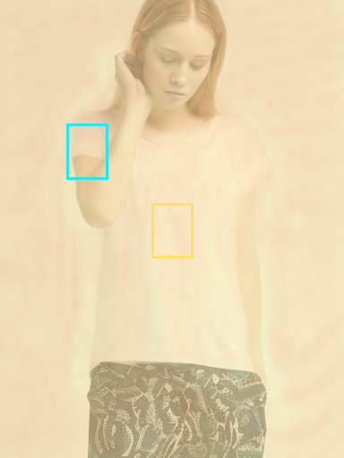
Initial LeFFA
box mass 1.4%Localization control
box mass 94.3%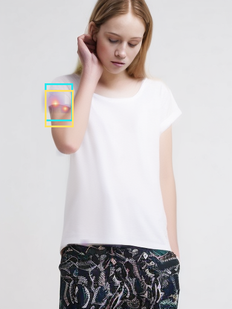
Localization + DINO
box mass 90.0%Right sleeve end · mass 1.4% → 81.6% · fixed-crop distance 0.3347 → 0.2150
Exact same region in every image
Real target cropInitial LeFFA
distance 0.3347Localization control
distance 0.3394Localization + DINO
distance 0.2150
Where the readout points
Cyan: automatic target box. Yellow: attention-centered crop. Heat colors are normalized per map for visibility; numeric mass is the quantitative comparison.
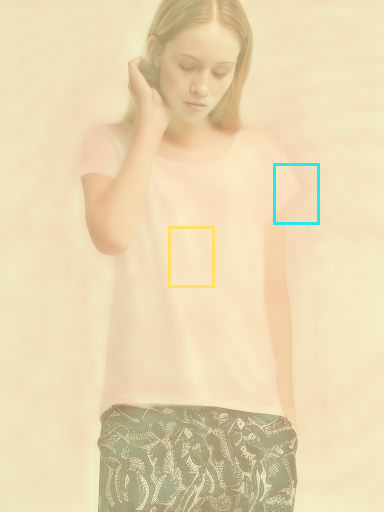
Initial LeFFA
box mass 1.4%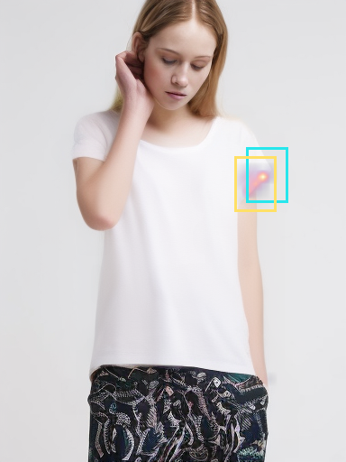
Localization control
box mass 86.0%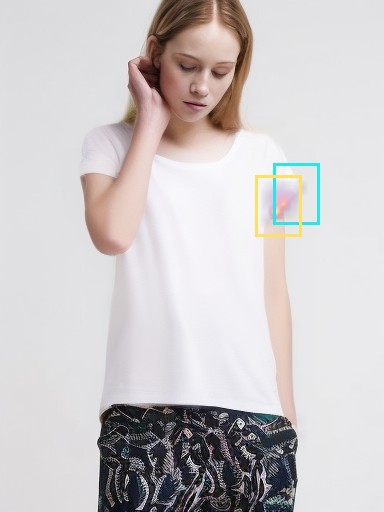
Localization + DINO
box mass 81.6%05697_00 DINO − control: -0.0342 at t=.5
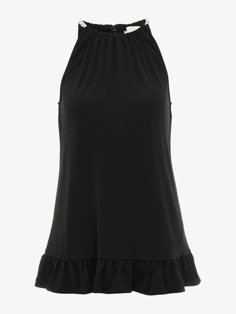
Garment condition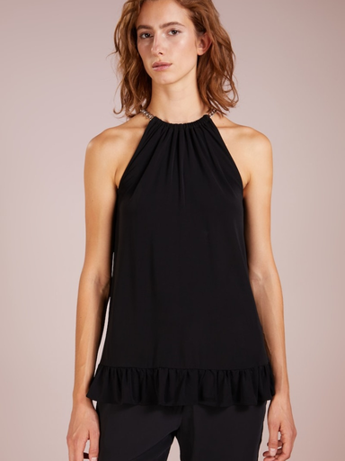
Real target Initial single-step estimateLocalization control
Initial single-step estimateLocalization control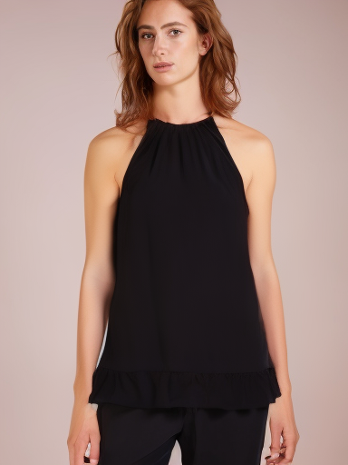
Localization + DINOCollar / neckline · mass 1.5% → 89.1% · fixed-crop distance 0.2675 → 0.2135
Exact same region in every image
 Real target crop
Real target crop Initial LeFFA
Initial LeFFA
distance 0.2675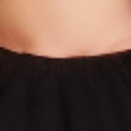
Localization control
distance 0.2478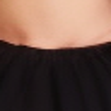
Localization + DINO
distance 0.2135Where the readout points
Cyan: automatic target box. Yellow: attention-centered crop. Heat colors are normalized per map for visibility; numeric mass is the quantitative comparison.
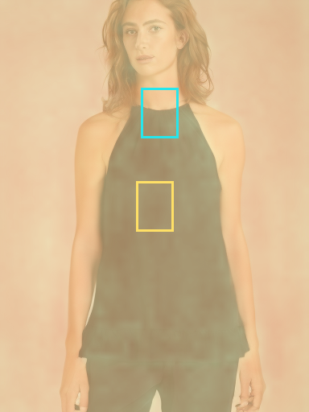
Initial LeFFA
box mass 1.5%Localization control
box mass 80.0%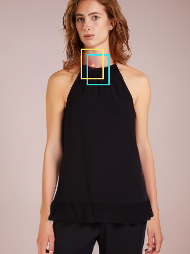
Localization + DINO
box mass 89.1%10215_00 DINO − control: -0.0322 at t=.5
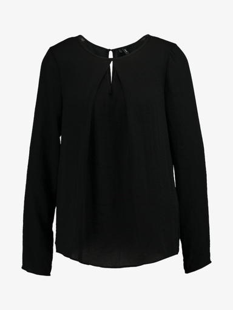
Garment condition Real target
Real target Initial single-step estimate
Initial single-step estimate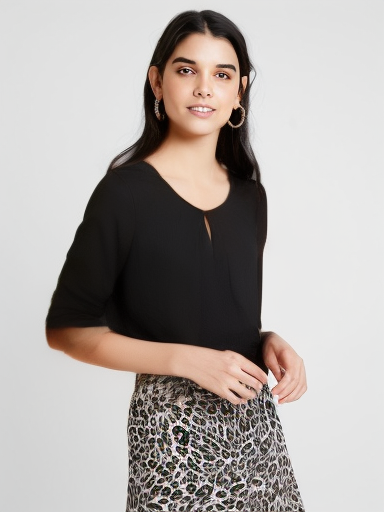
Localization control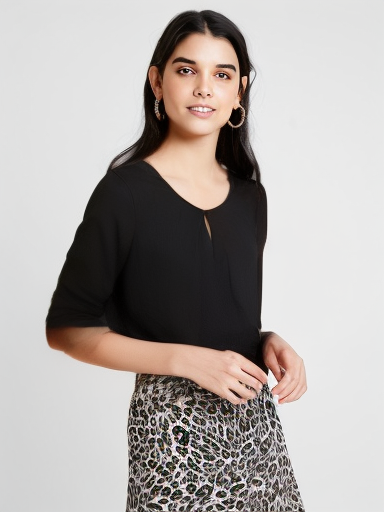
Localization + DINOCollar / neckline · mass 4.1% → 100.0% · fixed-crop distance 0.1349 → 0.1085
Exact same region in every image
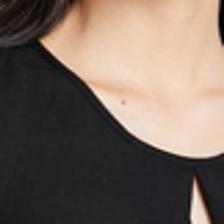
Real target crop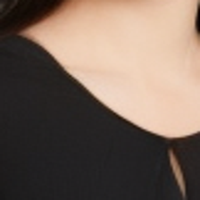
Initial LeFFA
distance 0.1349Localization control
distance 0.1407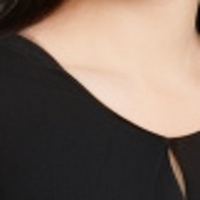
Localization + DINO
distance 0.1085Where the readout points
Cyan: automatic target box. Yellow: attention-centered crop. Heat colors are normalized per map for visibility; numeric mass is the quantitative comparison.
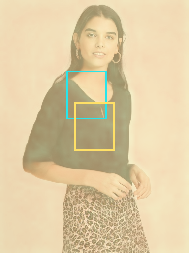
Initial LeFFA
box mass 4.1%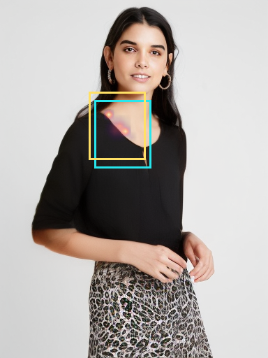
Localization control
box mass 100.0%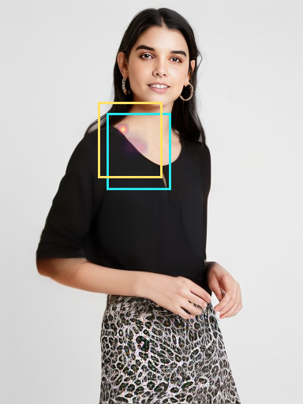
Localization + DINO
box mass 100.0%10337_00 DINO − control: -0.0273 at t=.5
 Garment condition
Garment condition Real target
Real target Initial single-step estimate
Initial single-step estimate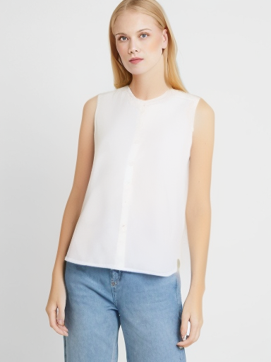
Localization control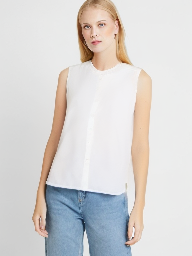
Localization + DINOCollar / neckline · mass 1.5% → 54.6% · fixed-crop distance 0.1459 → 0.1358
Exact same region in every image
Real target cropInitial LeFFA
distance 0.1459Localization control
distance 0.1630Localization + DINO
distance 0.1358
Where the readout points
Cyan: automatic target box. Yellow: attention-centered crop. Heat colors are normalized per map for visibility; numeric mass is the quantitative comparison.
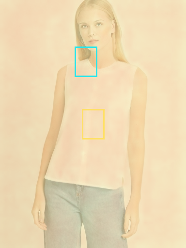
Initial LeFFA
box mass 1.5%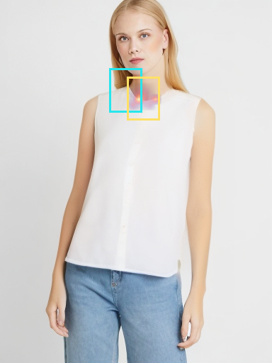
Localization control
box mass 52.2%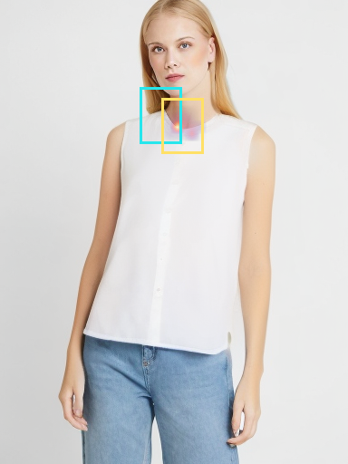
Localization + DINO
box mass 54.6%02993_00 DINO − control: -0.0264 at t=.5
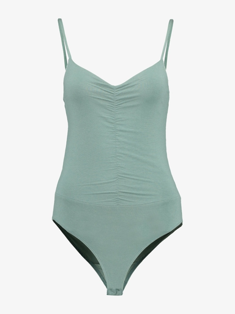
Garment condition Real targetInitial single-step estimateLocalization control
Real targetInitial single-step estimateLocalization control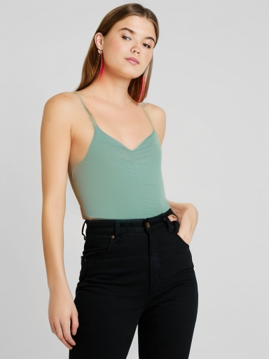
Localization + DINOCollar / neckline · mass 5.3% → 18.6% · fixed-crop distance 0.1262 → 0.1206
Exact same region in every image
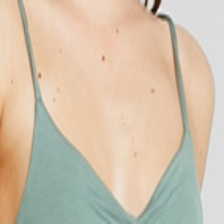
Real target cropInitial LeFFA
distance 0.1262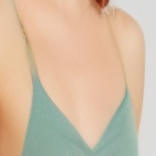
Localization control
distance 0.1470Localization + DINO
distance 0.1206Where the readout points
Cyan: automatic target box. Yellow: attention-centered crop. Heat colors are normalized per map for visibility; numeric mass is the quantitative comparison.
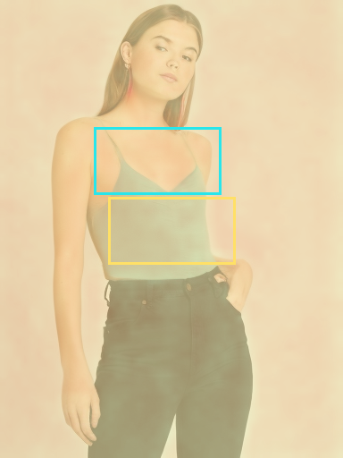
Initial LeFFA
box mass 5.3%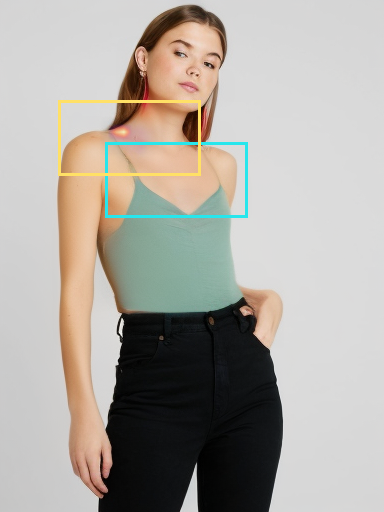
Localization control
box mass 17.9%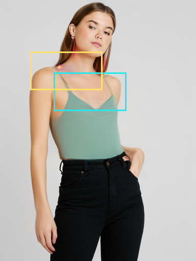
Localization + DINO
box mass 18.6%08055_00 DINO − control: -0.0264 at t=.5
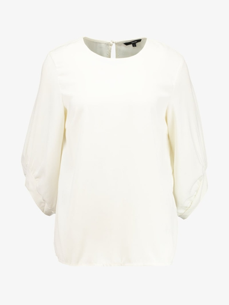
Garment condition Real targetInitial single-step estimate
Real targetInitial single-step estimate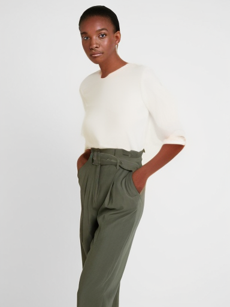
Localization control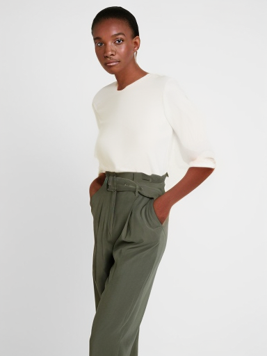
Localization + DINOCollar / neckline · mass 1.5% → 72.5% · fixed-crop distance 0.1793 → 0.1352
Exact same region in every image
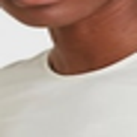
Real target crop Initial LeFFA
Initial LeFFA
distance 0.1793Localization control
distance 0.2078Localization + DINO
distance 0.1352Where the readout points
Cyan: automatic target box. Yellow: attention-centered crop. Heat colors are normalized per map for visibility; numeric mass is the quantitative comparison.
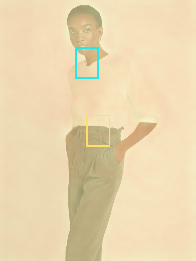
Initial LeFFA
box mass 1.5%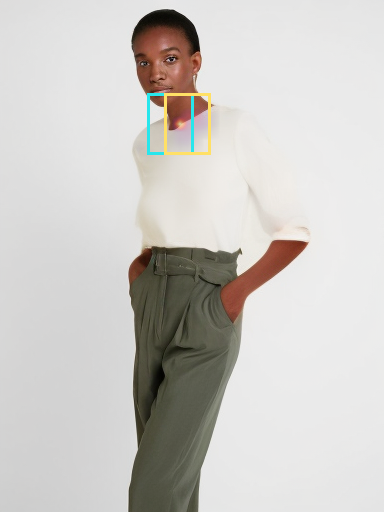
Localization control
box mass 69.5%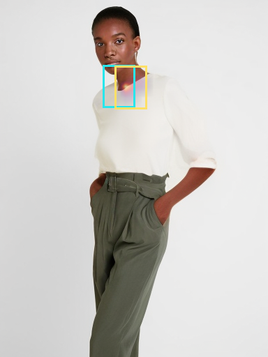
Localization + DINO
box mass 72.5%Left sleeve end · mass 1.5% → 64.8% · fixed-crop distance 0.5036 → 0.4950
Exact same region in every image
 Real target crop
Real target crop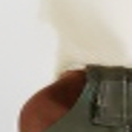
Initial LeFFA
distance 0.5036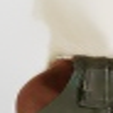
Localization control
distance 0.4995Localization + DINO
distance 0.4950Where the readout points
Cyan: automatic target box. Yellow: attention-centered crop. Heat colors are normalized per map for visibility; numeric mass is the quantitative comparison.
Initial LeFFA
box mass 1.5%Localization control
box mass 65.1%Localization + DINO
box mass 64.8%
Right sleeve end · mass 1.3% → 86.3% · fixed-crop distance 0.7813 → 0.7869
Exact same region in every image
 Real target crop
Real target crop Initial LeFFA
Initial LeFFA
distance 0.7813Localization control
distance 0.7888Localization + DINO
distance 0.7869Where the readout points
Cyan: automatic target box. Yellow: attention-centered crop. Heat colors are normalized per map for visibility; numeric mass is the quantitative comparison.
Initial LeFFA
box mass 1.3%Localization control
box mass 86.3%Localization + DINO
box mass 86.3%
06742_00 DINO − control: -0.0210 at t=.5
Garment condition Real target
Real target Initial single-step estimateLocalization controlLocalization + DINO
Initial single-step estimateLocalization controlLocalization + DINO Collar / neckline · mass 4.2% → 100.0% · fixed-crop distance 0.2048 → 0.1763
Exact same region in every image
 Real target crop
Real target crop Initial LeFFA
Initial LeFFA
distance 0.2048Localization control
distance 0.1995Localization + DINO
distance 0.1763Where the readout points
Cyan: automatic target box. Yellow: attention-centered crop. Heat colors are normalized per map for visibility; numeric mass is the quantitative comparison.
Initial LeFFA
box mass 4.2%Localization control
box mass 100.0%Localization + DINO
box mass 100.0%
Left sleeve end · mass 1.5% → 69.7% · fixed-crop distance 0.3474 → 0.3371
Exact same region in every image
 Real target cropInitial LeFFA
Real target cropInitial LeFFA
distance 0.3474Localization control
distance 0.3405Localization + DINO
distance 0.3371Where the readout points
Cyan: automatic target box. Yellow: attention-centered crop. Heat colors are normalized per map for visibility; numeric mass is the quantitative comparison.
Initial LeFFA
box mass 1.5%Localization control
box mass 99.0%Localization + DINO
box mass 69.7%
Right sleeve end · mass 1.4% → 77.1% · fixed-crop distance 0.2297 → 0.1902
Exact same region in every image
 Real target crop
Real target crop Initial LeFFA
Initial LeFFA
distance 0.2297Localization control
distance 0.2264Localization + DINO
distance 0.1902Where the readout points
Cyan: automatic target box. Yellow: attention-centered crop. Heat colors are normalized per map for visibility; numeric mass is the quantitative comparison.
Initial LeFFA
box mass 1.4%Localization control
box mass 79.7%Localization + DINO
box mass 77.1%
07735_00 DINO − control: -0.0100 at t=.5
 Garment condition
Garment condition Real targetInitial single-step estimateLocalization controlLocalization + DINO
Real targetInitial single-step estimateLocalization controlLocalization + DINOCollar / neckline · mass 1.4% → 83.4% · fixed-crop distance 0.1446 → 0.1533
Exact same region in every image
Real target cropInitial LeFFA
distance 0.1446Localization control
distance 0.1634Localization + DINO
distance 0.1533
Where the readout points
Cyan: automatic target box. Yellow: attention-centered crop. Heat colors are normalized per map for visibility; numeric mass is the quantitative comparison.
Initial LeFFA
box mass 1.4%Localization control
box mass 85.0%Localization + DINO
box mass 83.4%
Evidence & reproducibility
Complete result · Real gradient verification · Run provenance · Paired image statistics · Source code · Vector localization plot · Vector DINO plot